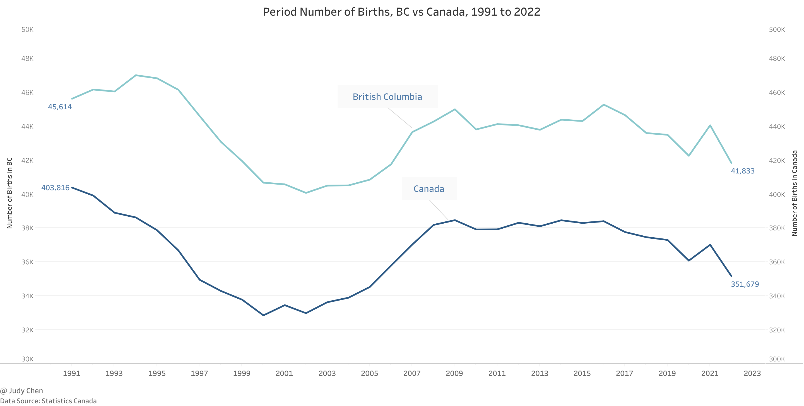
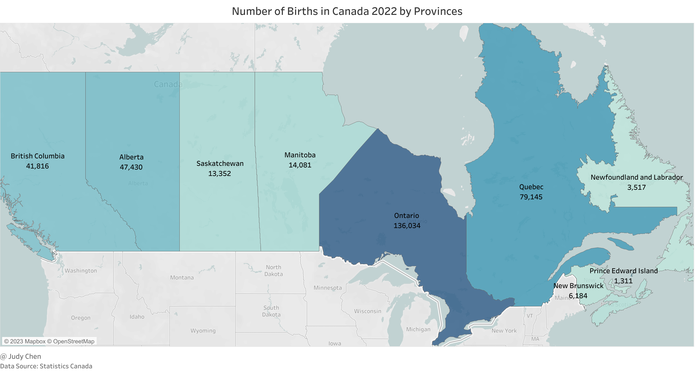
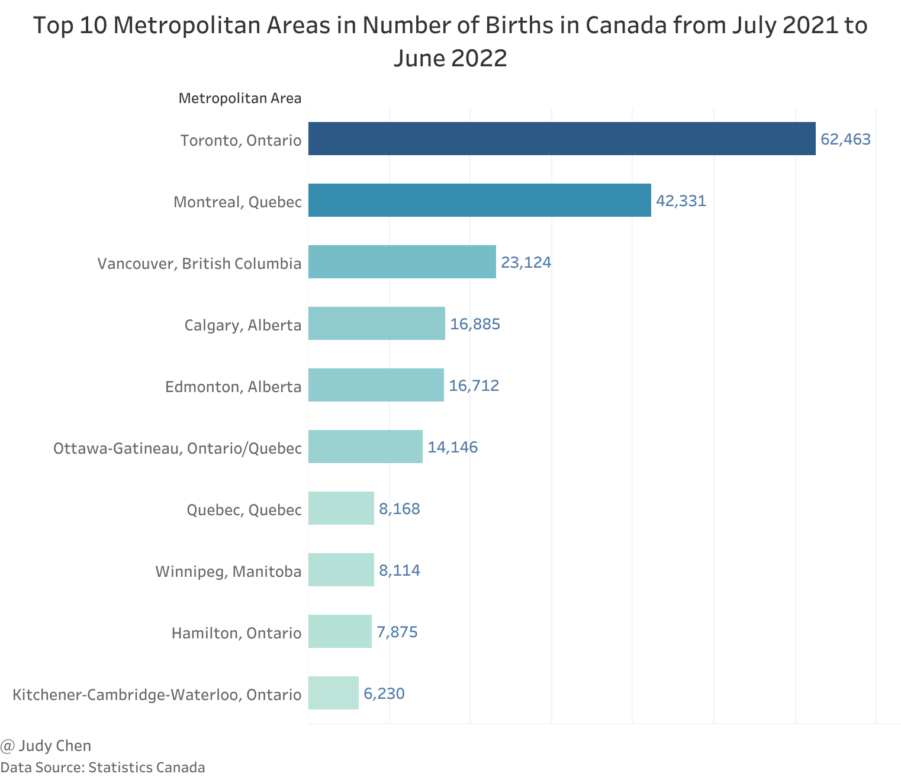
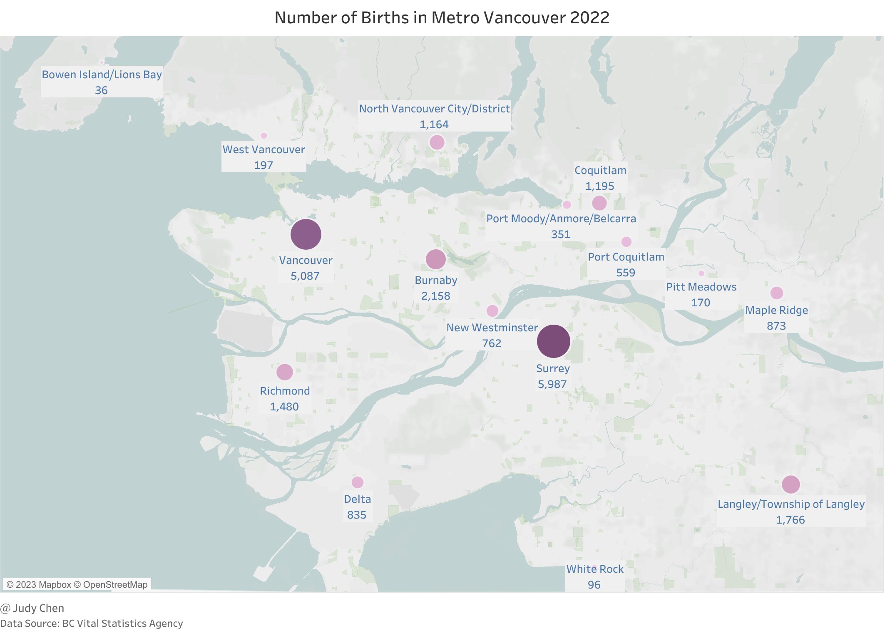
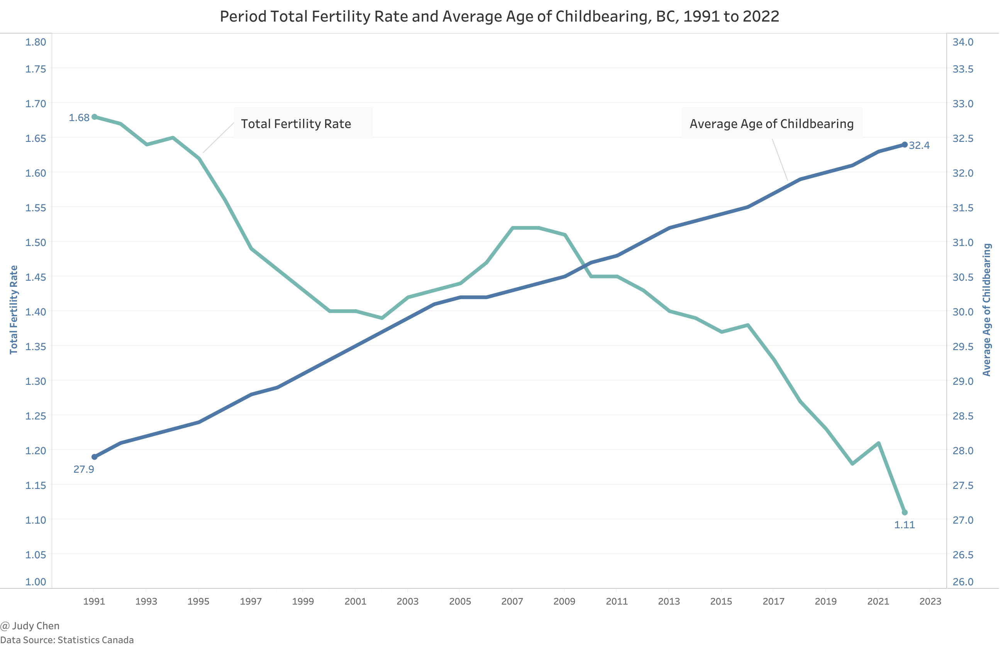
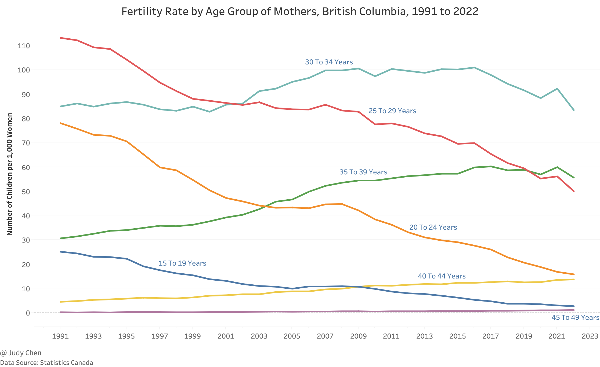
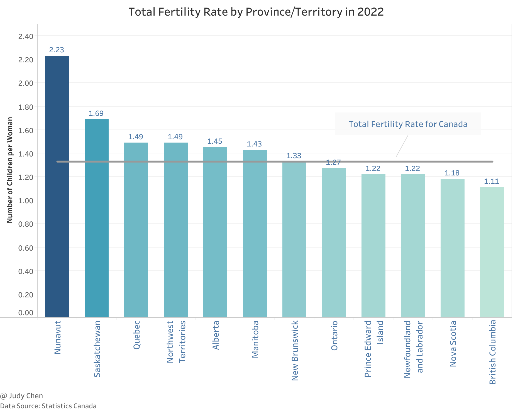
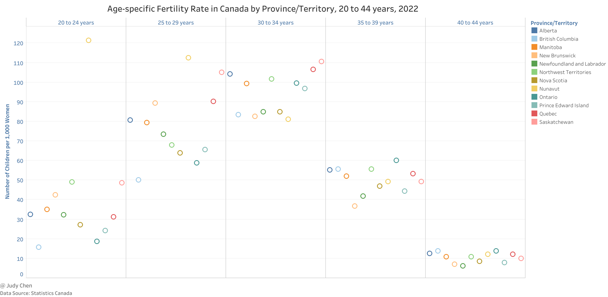
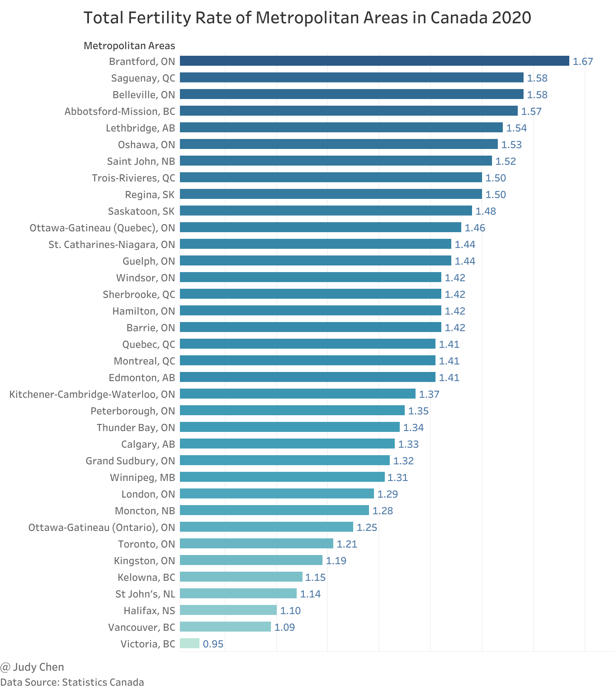
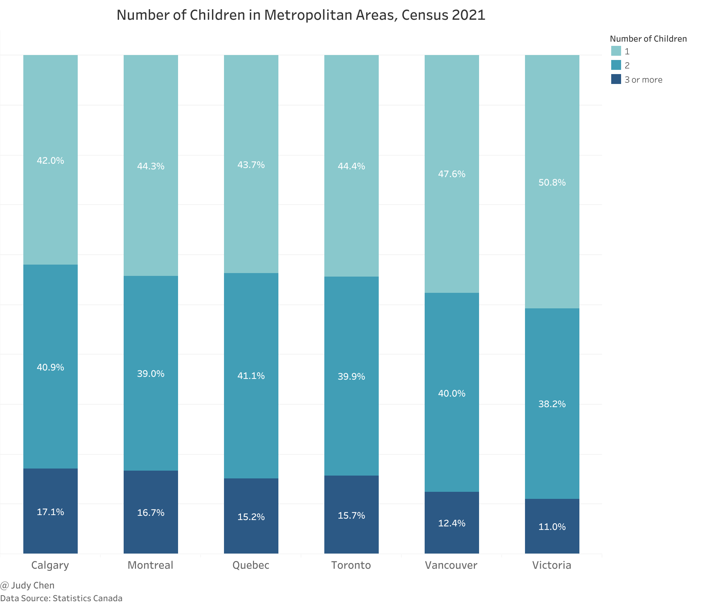

Birth Trends & Fertility Rates#
A Comprehensive Analysis of Birth Trends & Fertility Rates in British Columbia and Metro Vancouver
Number of Births#
Number of Briths in British Columbia#
Examining the period from 1991 to 2022, the figure below illustrates a consistent trend in the number of births in British Columbia, closely mirroring the national trend. However, British Columbia experienced a relatively smaller decline of 8.29% compared to Canada’s 12.9% decrease.

In 2022, Ontario led the provinces in new births, followed by Quebec and Alberta, with British Columbia securing the fourth position. Notably, Prince Edward Island recorded the lowest number of new births.

Number of Births in Metro Vancouver#
For the period spanning July 1, 2021, to June 30, 2022, approximately 264 thousand births occurred across Canadian metropolitan areas. Toronto claimed the top spot with 62.5 thousand births, which means that during the period, one out of 5.6 children in Canada were born in Toronto. It was followed by Montreal where 42,331 babies were born and Vancouver with 23,124 live births.

Based on the data from BC Vital Statistics Agency, we draw the below map about the number of births within Metro Vancouver in 2022.

Surrey, within Metro Vancouver, stood out with nearly 6,000 new births, followed by Vancouver and Burnaby. Conversely, Bowen Island/Lions Bay, White Rock, and Pitt Meadows reported the lowest numbers of births in 2022.
Fertility Rate#
Of all the components of population growth, fertility tends to have the largest impact on the size of the population. We will explore total fertility rate and age-specific fertility rate respectively here.
Age-specific fertility rate – the number of live births per 1,000 females in a specific age group.
Total fertility rate – an estimate of the average number of live births a female can be expected to have in her lifetime based on the age-specific fertility rates of a given year, and is the sum of single year of age-specific fertility rates divided by 1,000.
Fertility Rate in British Columbia#
Over recent years, British Columbia has witnessed a gradual and continuous decline in its total fertility rate, dropping from 1.52 children per woman in 2008 to 1.11 in 2022. Simultaneously, the average age of women at childbirth has steadily increased to 32.4 years in 2022.

Notable shifts in age-specific fertility rates reveal that: since 2002, women aged 30 to 34 have had higher fertility than those aged 25 to 29; since 2004, women aged 35 to 39 have had higher fertility than those aged 20 to 24 and since 2010, women aged 40 to 44 have had higher fertility rates than those aged 15 to 19.

Comparing the total fertility rate across provinces/territories in 2022, Nunavut secured the top position, while British Columbia reported the lowest rate. Interestingly, provinces with high birth numbers may still exhibit low total fertility rates, exemplified by Ontario’s lower rate despite having the highest number of live births in 2022.

In the year 2022, a prevailing pattern emerges across most provinces and territories regarding age-specific fertility rates. The data reveals a consistent trajectory where fertility rates ascend with the age of women, peaking in the 30-34 age group, followed by a decline as age increases.

However, Nunavut and New Brunswick exhibit distinctive trends. In Nunavut, the fertility rate undergoes a continuous decline with the age of women, particularly noticeable from the 20-24 age group onwards. On the other hand, New Brunswick deviates from the general trend by reaching its peak fertility rate in the 25-29 age group.
British Columbia stands out with a unique profile in age-specific fertility rates. Notably, it records the lowest fertility rates in both the 20-24 and 25-29 age groups, indicating a trend where younger women in the province opt for delayed childbirth. In the 30-34 age group, British Columbia ranks third lowest in fertility rates. However, the province experiences an upswing in fertility rates in the 35-39 age group, securing the second-highest position. The most notable distinction occurs in the 40-44 age group, where British Columbia claims the highest fertility rate. This distinctive pattern suggests a tendency among women in British Columbia to defer childbirth to later years compared to the overall trend observed in other provinces. Interestingly, Ontario mirrors this behavior, indicating a similar preference for delayed childbirth.
Fertility Rate in Metro Vancouver#
While fertility rate data for 2022 is unavailable, a brief analysis using 2020 data showcases Victoria with the lowest total fertility rate at 0.95, followed by Vancouver at 1.09. Factors contributing to higher total fertility rates outside major metropolitan areas include lower housing costs, attracting younger households.

Now let’s compare family size distribution in six metropolitan areas based on Census 2021.

In Victoria, Census 2021 data reveals a predominant trend in family size distribution, with more than half of families with children opting for a single-child household. A mere 11% of families with children in Victoria have three or more children, indicating a prevalent inclination towards smaller family sizes.
Moving to Vancouver, the distribution of family sizes portrays a slightly different picture. Here, 47.6% of families with children opt for a single-child arrangement, while 40% of families choose to have two children. Families with three or more children constitute 12.4% of the total, showcasing a moderate preference for larger families compared to Victoria.
In Calgary, the family size distribution takes a distinctive turn. Here, a notable 42% of families with children opt for a single-child arrangement, signifying a prevalent trend towards smaller families. On the contrary, Calgary exhibits the highest percentage, 17.1%, of families with three or more children, suggesting a more pronounced inclination towards larger families compared to both Victoria and Vancouver.
Conclusion#
In conclusion, the demographic landscape of British Columbia and Metro Vancouver reflects nuanced trends in birth rates and fertility, as well as distinctive family size preferences. British Columbia, while experiencing a gradual decline in birth rates, stands out with a unique age-specific fertility profile, showcasing a tendency for delayed childbirth, particularly in the 35-39 and 40-44 age groups. The province’s total fertility rate of 1.11 in 2022, the lowest among all provinces/territories, underlines the evolving reproductive choices of its residents.
Metro Vancouver, as the third-ranking region in terms of the number of births, exhibits a comparable decline in fertility rates, with Surrey and Vancouver leading in new births. The region’s second-lowest total fertility rate among metropolitan areas raises questions about the underlying factors influencing family planning, such as high living costs and limited resources.
The family size distribution analysis based on Census 2021 highlights diverse preferences across metropolitan areas. While Victoria leans towards smaller families, with more than half having only one child, Vancouver demonstrates a balanced distribution with moderate preferences for two-child households. Calgary, on the other hand, stands out for a notable percentage of families with three or more children, showcasing a distinctive inclination towards larger families.
Understanding these intricate demographic dynamics is imperative for informed policy formulation, addressing the evolving needs of diverse communities, and fostering a comprehensive approach to societal planning. As we navigate these shifts, acknowledging the regional idiosyncrasies in reproductive choices and family planning remains crucial for fostering a holistic understanding of population dynamics in British Columbia and Metro Vancouver.
January 2024